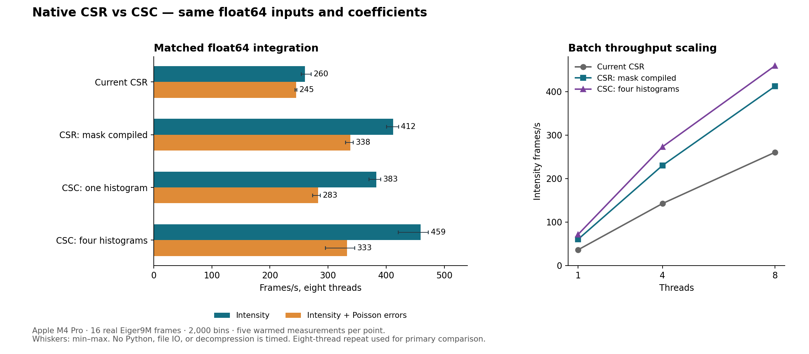

Measured November 5, 2026 on the same Apple M4 Pro and Eiger9M data. Every timed pixel, coefficient, accumulator and result is float64. This is a standalone benchmark prototype; production Dioptrin was not modified.

| Eight-thread kernel | Intensity fps | Speedup | Poisson fps | Speedup |
|---|---|---|---|---|
| Current CSR | 260.4 | 1.00× | 244.9 | 1.00× |
| CSR, static mask compiled | 412.1 | 1.58× | 338.3 | 1.38× |
| CSC, one histogram | 382.8 | 1.47× | 282.6 | 1.15× |
| CSC, four histograms | 459.4 | 1.76× | 332.7 | 1.36× |
The simpler improvement is compiling the static detector mask into the CSR execution table once: discard masked entries and use the existing branch-free production CSR kernel, without changing any remaining weight bits. This alone improves intensity throughput by about 58% and Poisson throughput by about 38% here. The four-histogram CSC prototype reaches about 76% higher intensity throughput than current CSR, roughly 11% beyond compacted CSR. With errors it is approximately tied with compacted CSR within the measured variation.
The transpose is checked coefficient-by-coefficient: the float64 weight bits are unchanged. Both layouts use the same cached denominator. Strict CSR and CSC results are byte-identical on all 16 frames, including Poisson uncertainties. Fast kernels differ only in summation order; maximum observed relative L2 differences are 2.97e-15 for intensity and 5.66e-16 for Poisson sigma.
The current mask test remains in the per-contribution inner loop. Compiling the same intensity row routine in isolation under the same Rust release optimization shows scalar FMAs and conditional branches for the masked case, versus two-lane float64 SIMD FMA instructions for the unmasked case. See assembly and diagnostic source. These are generated-code observations, not sampled hardware counters.
The four-histogram CSC version interleaves consecutive pixels across four independent output histograms, then reduces them. This keeps updates to nearby bins from forming one long dependency chain. A simple one-histogram CSC loop is slower than compacted CSR at eight threads; changing sparse format alone is not the complete optimization.
Array payloads: original CSR 253.4 MB, compacted CSR 230.9 MB, float64 CSC 271.5 MB. The CSC pointer per input pixel makes it larger despite mask compaction. These are logical array payloads, not peak RSS or bytes measured from memory counters.
Implement static-mask compaction for cached CSR first. Then consider a CSC batch backend for additional intensity-only throughput. Production integration still needs mask-change invalidation, memory/setup assessment, one-image latency and 2D tests before either prototype can be adopted.
CARGO_TARGET_DIR=/Users/clemens/Programming/Dioptrin/target cargo test --manifest-path Cargo.toml --offline CARGO_TARGET_DIR=/Users/clemens/Programming/Dioptrin/target cargo build --release --manifest-path Cargo.toml --offline /Users/clemens/Programming/Dioptrin/target/release/dioptrin-csr-csc-f64-probe 8 /tmp/dioptrin-bridge-investigation-20261105 /tmp/dioptrin-bslz4-lut-20261105/pixel_split
The backing float64 frames, detector mask and exported LUT are the same prepared files used earlier; their hashes and frame indices are recorded in provenance.json. Large detector buffers were not copied into this report folder. Run at 1, 4 and 8 threads in separate processes. The JSONL files contain raw native events; JSON records additionally contain observed competing CPU load.